Actividad 4.1: Instalación de Docker Engine en Linux
Se hizo la instalación completa de Docker engine en una distribución de Linux grafica
Paso1. actualizar la lista de paquetes
Se debe actualizar la lista de paquetes disponibles desde los repositorios del sistema para poder instalar el software
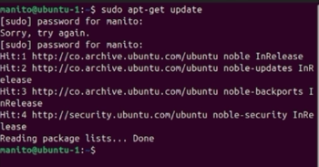Paso2. Instalar herramientas
Se instalan las herramientas necesarias para poder descargar Docker desde su repositorio oficial
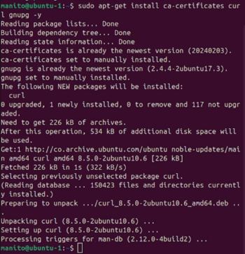Paso3. Crear directorio:
Crear el directorio donde se van a guardar las claves de los repositorios y establecerle permisos de escritura y lectura.
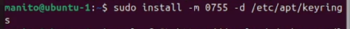Paso4. Descargar clave de docker:
Descargar y guardar la clave oficial de Docker en el directorio que creamos
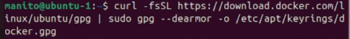Paso5. Dar permisos:
Darles permisos a los usuarios de la clave GPG
Paso6. Agregar dirección:
Agregar la dirección de el repositorio oficial de Docker al a lista de repositorios de nuestro sistema para poder instalar Docker
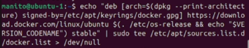Paso7. Actualizar lista de paquetes:
Actualizar nuevamente la lista de paquetes para incluir el repositorio de Docker que acabamos de agregar al directorio.
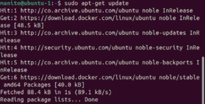Paso8. Instalar docker:
Instalar todos los componentes de Docker para poder usarlo sin ningún problema. Como se aprecia en la siguiente imagen.
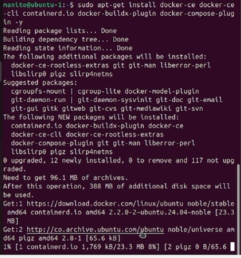Paso9. Verificar instalación:
Verificar si la instalación se hizo correctamente con Docker –version y Docker – info. Como se aprecia en la siguiente imagen
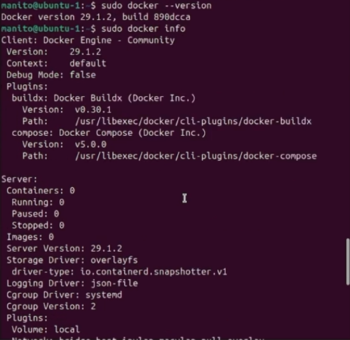Paso10. Agregar usuario
Agregar el usuario al grupo de Docker para poder usar sus comandos sin necesidad de poner sudo, también vamos a configurar la opción de que Docker se inicie automáticamente siempre que se inicie el sistema.
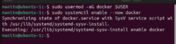Paso11. Verificar:
Verificar si todo se instaló correctamente con docker run hello-world

A continuación se anexa el link al video del punto 4.1: link
Actividad 4.2: Creación de imagen Docker
Paso1. Descargar imagen:
Descargar una imagen de referencia en la cual se va a basar nuestra imagen, en este caso usaremos debian
Paso2. Crear Dockerfile:
Crear el documento Dockerfile con exactamente ese mismo nombre y dentro de el agregar la estructura de nuestro contenedor.
Paso3. Crear la imagen:
con el comando docker build crear nuestra imagen agregándole un nombre y una versión
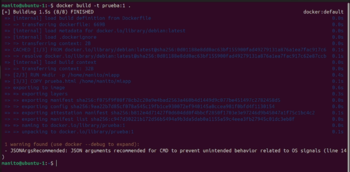Paso4. Verificar:
verificar si se creo la imagen correctamente con docker images
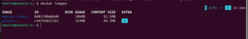Comandos para crear dockerfile:
- FROM: El FROM sirve para ver cuál es la imagen de referencia en la cual se va a crear la imagen, en este caso usamos debian como imagen de referencia.
- RUN: El RUN sirve para ejecutar comandos mientras se construye la imagen, en este caso actualizamos configuraciones e instalamos vim entre otras cosas.
- USER: El USER sirve para cambiar de usuario.
- COPY: El COPY sirve para copiar los archivos que elijamos, y meterlos a la imagen.
- EXPOSE: El EXPOSE nos sirve para ver en qué puerto va a correr nuestro contenedor.
- CMD: El CMD no sirve para saber que se va a ejecutar cuando ejecutamos el contenedor.
A continuación se anexa el link a la documentación del punto 4.2: link
Actividad 4.3 Creación y gestión de contenedor:
Paso1. Crear contenedor:
Con el comando Docker créate vamos a crear nuestro contenedor, asignándole un puerto, un nombre y la imagen de la cual va a basar nuestro contenedor
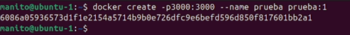Paso2. Verificar creación:
Revisar si se creó correctamente con docker ps -a
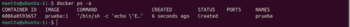Paso3. Iniciar contenedor:
Iniciar nuestro contenedor con docker start

Paso4. verificar ejecución:
Verificar si el contenedor se ejecutó correctamente con docker ps
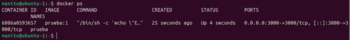Paso5. Verificar logs:
erificamos los logs del contenedor para ver si esta funcionando correctamente con docker logs
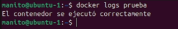Paso6. Verificar información:
Podemos ver toda la información de nuestro contenedor con docker inspect
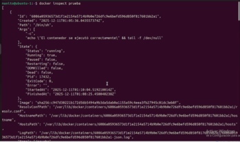Paso7. Entrar en modo interactivo:
Podemos entrar en modo interactivo al contenedor con docker exec -it
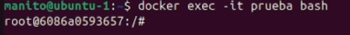Paso8. Detener contenedor:
Detenemos nuestro contenedor después de hacer todas las pruebas con docker stop
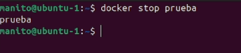Paso9. Eliminamos el contenedor:
Para eliminar el contenedor usamos docker rm
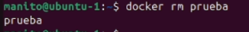Paso10. Verificamos eliminación:
Verificamos que se eliminó con docker ps -a
Explicación de cada comando:
- docker ps: Este comando nos muestra los contenedores que están actualmente en ejecución
- docker ps -a: Este comando nos muestra todos los contenedores, aunque no estén en ejecución
- docker start: Este comando inicia el contenedor al cual se le hace referencia
- docker stop: Este comando termina la ejecución de el contenedor al cual se le hace referencia
- docker exec: Este comando sirve para ejecutar instrucciones a un contenedor que este en ejecución
- docker logs: Este comando sirve para ver los mensajes que genera un contenedor, como por ejemplo errores o mensajes de arranque
- docker inspect: Este comando sirve para ver las configuraciones internas del contenedor
- docker rm: Este comando sirve para eliminar el contenedor al que se le hace referencia
A continuación se anexa el link al video del punto 4.3: link